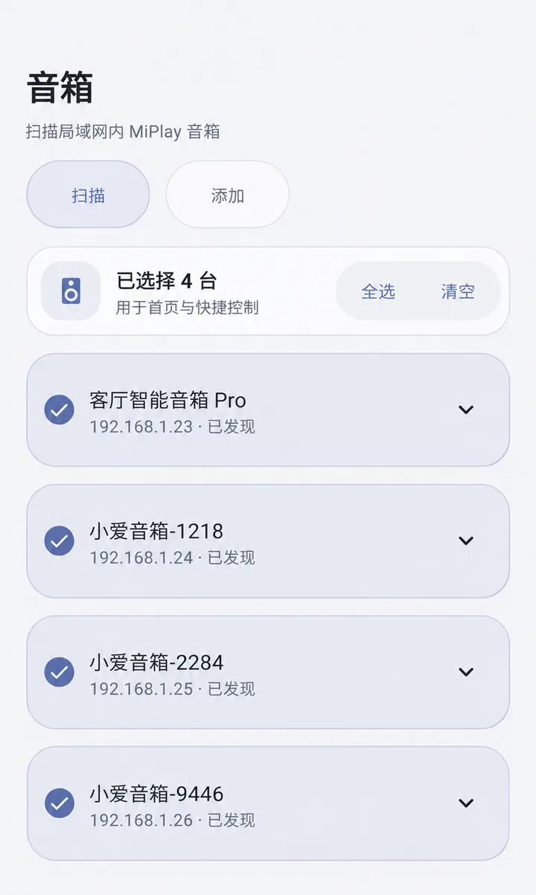

一起播放
一次选择，
让多个房间一起响。
多个房间播放同样的声音，
每台音箱的音量都能单独调。
让手机和小爱音箱，轻松连起来
喜欢的歌、正在追的剧、一起玩的游戏。
把声音交给小爱音箱，手机继续做你想做的事。
稳定版·安卓 10 及以上·同一 Wi-Fi 连接

把连接变简单
不用换小米手机，也不用到系统设置里找投屏。
打开推米，就能连接支持妙播的小爱音箱。
多个房间播放同样的声音，
每台音箱的音量都能单独调。
可以只传音乐 App 的声音，
也可以选「全部应用」，一起传送手机声音。
在通知栏暂停、静音或打开快捷控制。
不必离开正在使用的 App。
轻盈，也顺手
音箱连上没有，声音送到哪里，
打开推米，一眼就能看到。
音箱 · 扫描与选择 App 实际界面
几步就准备好
手机和小爱音箱，连上同一个 Wi-Fi。
手机需要安卓 10 及以上，音箱需要支持妙播。
下载安装包，跟着手机提示
完成安装，并允许录制声音。
打开「音箱」页面查找设备，
选中想要一起播放的音箱。
回到首页开始推送，再打开
喜欢的媒体 App 播放内容。
下载较慢？前往 GitHub 下载
可在 GitHub 下载页查看对应版本的 SHA-256 校验值。可以。只要手机是安卓 10 或以上，音箱支持妙播，就可以尝试连接，不需要手机自带小米投屏功能。不同手机和音箱的连接效果可能有所不同。
音箱需要支持妙播（MiPlay），兼容的小爱音箱可以连接。只有蓝牙功能的音箱暂不适用，未测试型号请以实际连接结果为准。
默认最多同时连接 2 台音箱。开通 PushMi Plus 后可以连接更多台，授权长期有效并绑定当前设备。具体开通方式可以在 App 里查看。
播放时，声音只在手机和音箱之间传送，不上传到服务器。开通 Plus、查看购买信息和检查更新时，需要连接互联网。
有些 App 不允许把声音传给其他应用，这是系统和播放 App 的限制。可以先换一个音乐或视频 App 试试，并检查推米的静音开关和「全部应用／单个应用」选择是否正确。
先确认手机和音箱连的是同一个 Wi-Fi，尽量不要使用访客网络。声音卡顿时，可以在设置里换个音质或延迟选项，并允许推米在后台运行。声音传到音箱需要一点时间，具体快慢与手机、网络和音箱有关。